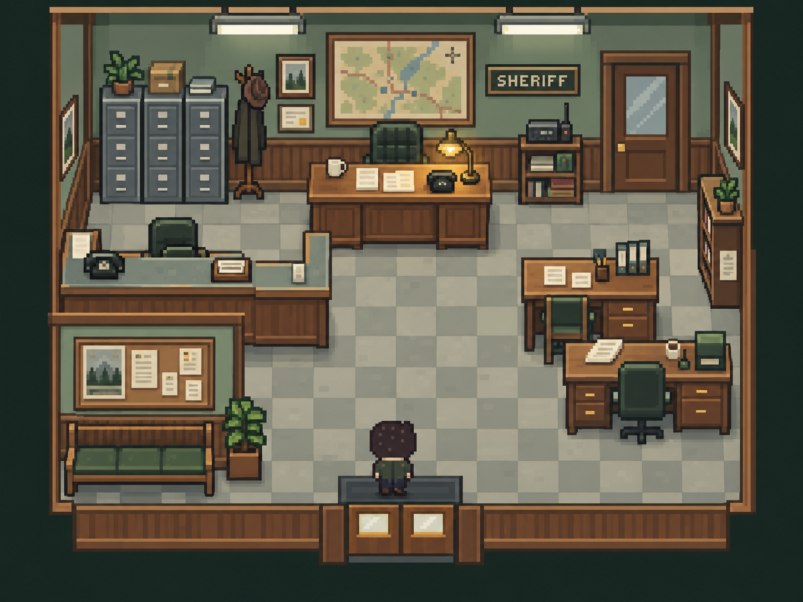
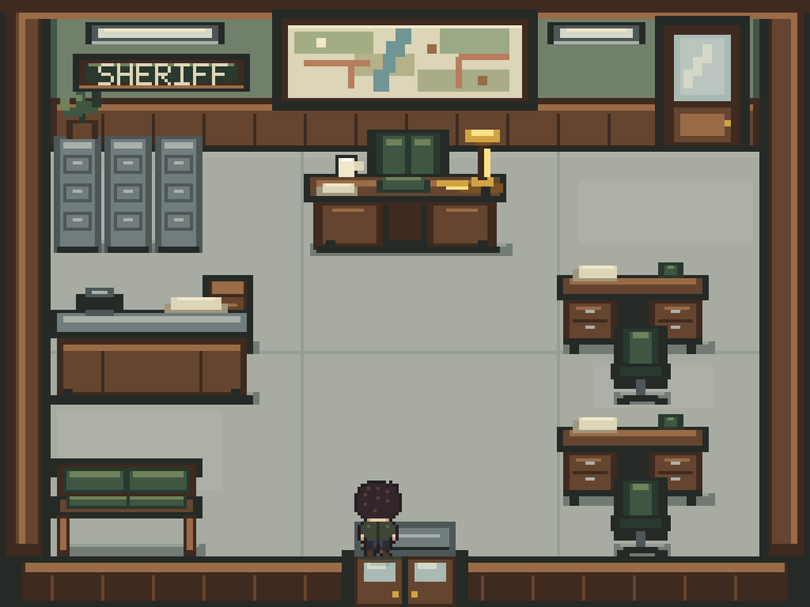
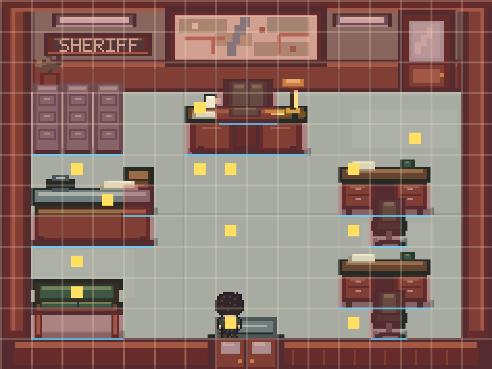

Sheriff’s Station — main interior v0.2
Same central entrance-to-desk axis, sage and oak office, steel files, cool practical light and one warm task lamp. Native geometry uses the existing 16px world grid and unchanged Cooper.

Golden concept v01Identity and hierarchy reference.

Native result v0.2Real renderer, collision, depth and player sprite. No concept-image backdrop.

Collision and walkabilityOverlay is inspection-only; normal play uses the clean view.
Rear door remains background architecture. No new traversal, Ambient Life, audio or narrative. Compare atmosphere and playable hierarchy rather than matching concept pixels.